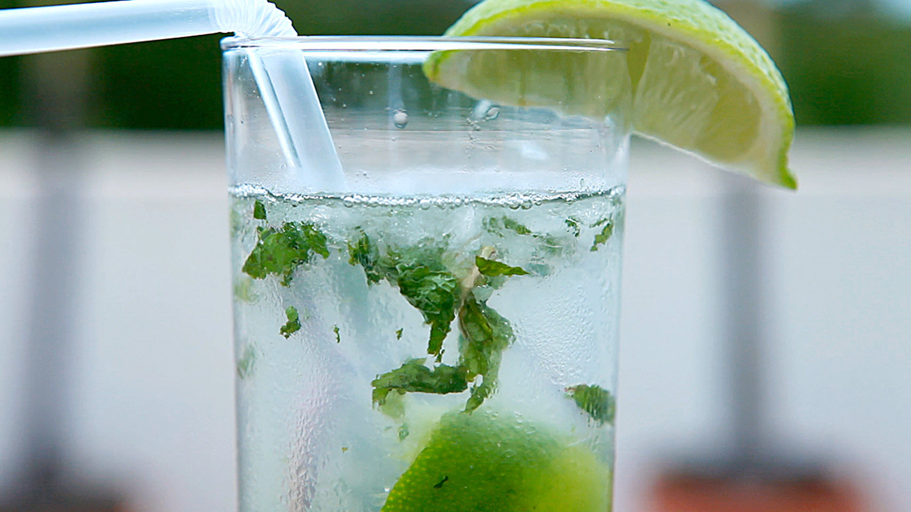

Cuban Mohito

Description
This is a traditional mpjito recipe. The muddling and order of ingredients helps ensure that all the flavors are well blended.
Serve with a straw and a decorative stir stick to keep the different flavors well mixed together. Mint sprigs may be used for a garnish instead of lime wedges.
Enjoy!
Servings: 2
Ingredients:
- 2 tsp white sugar
- 1 lime, cut into 4 wedges
- 4 sprigs fresh mint
- 1/2 cup white rum
- 2 cups club soda
- 2 cups crushed ice
- 2 wedges lime, as garnish
Steps:
- Place 1 tsp of sugar into each of 2 12 ounce glasses. Squeeze the juice from a lime wedge into each glass, drop in the wedge, and add 2 sprigs of mint.
- Use a spoon or muddler to mash the sugar, lime juice, and mint together in the bottom of the glasses.
- Fill each glass about half full with crushed ice.
- Pour 1/4 cup rum into each glass.
- Fill the glasses with club soda, stir, and garnish with additional lime wedges.
Nutrition:
- Calories: 148
- Protein: 0.2g
- Carbs: 5g
- Fat: 0.1g